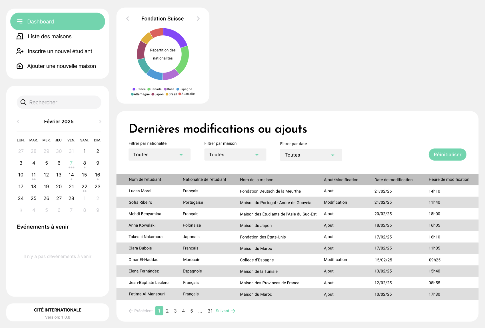
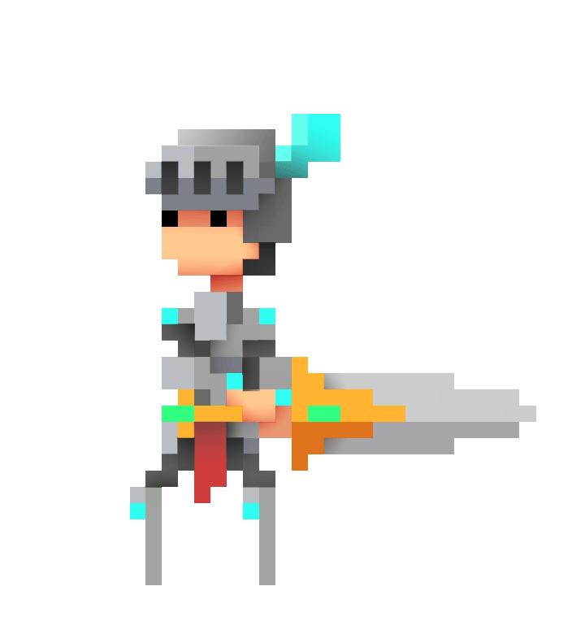
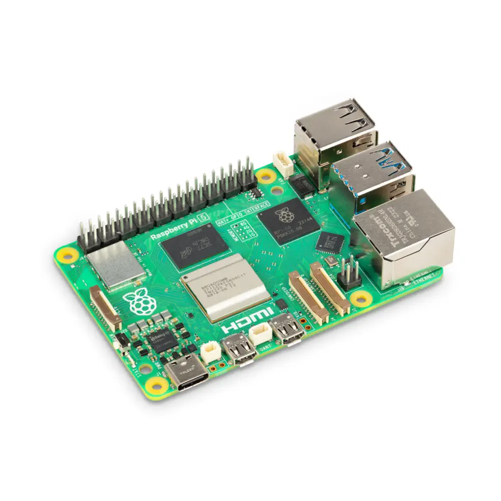

Gestion de la CIUP
Une application de gestion des maisons et des étudiants de la Cité internationale universitaire de Paris.
Pour chaque projet : le contexte, le travail réalisé, les outils utilisés et ce que j’ai appris.

Une application de gestion des maisons et des étudiants de la Cité internationale universitaire de Paris.

UN UNIVERS EN PIXELSUn jeu 2D en C++ : animations, niveaux, collisions et ennemis dans un univers pixel art.

LINUX / MARIADB / SSHInstallation d’un environnement Linux et d’un serveur MariaDB sur Raspberry Pi, avec documentation en anglais.
Un projet de configuration réseau sous Linux : services, accès distants et compréhension des échanges.
Essaie un autre terme ou enlève un filtre.
Sélection privée, dans ce navigateur.
Vous pouvez me joindre par email ou sur LinkedIn.